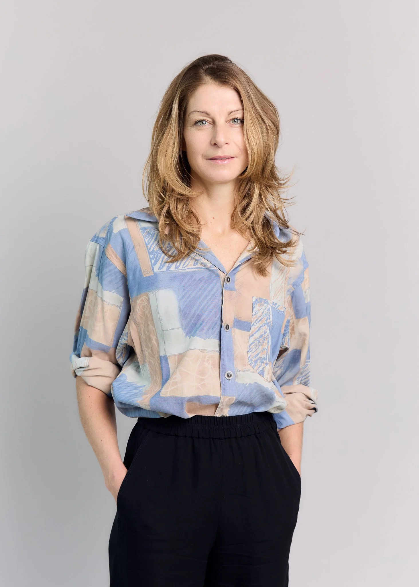
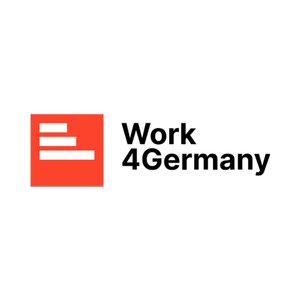

CasesCareer Coaching
Wie wir Dr. Anja Adler durch ihren Karrierewechsel begleitet haben. How we supported Dr. Anja Adler through her career change.
Anja begleitet Menschen, selbstorganisierte Gruppen, Teams und Organisationen dabei, Vision und Mission zu schärfen, passende Strukturen und Prozesse aufzubauen, Kultur und Kommunikation zu reflektieren und ihr Potenzial zu entfalten. Anja supports individuals, self-organised groups, teams and organisations in sharpening their vision and mission, building fitting structures and processes, reflecting on culture and communication and realising their potential.

Über AnjaAbout Anja
Bodenständig, voller Ideen und neugierig auf das, was kommt.Grounded, full of ideas and curious about what's next.
Aus über zehn Jahren Aktivismus und Praxis bringt Anja viel Erfahrung mit New Work und Selbstorganisation mit, dazu einen großen Methodenkoffer. Sie nimmt fein wahr, was noch nicht gesagt oder gefühlt wurde, und übersetzt in ihrer angewandten Forschung Neues in Sprache und Bilder.From more than ten years of activism and practice, Anja brings deep experience with New Work and self-organisation, plus a large toolbox of methods. She senses what has not yet been said or felt, and in her applied research she translates the new into language and images.
Anja hat den Wechsel geschafft und eine Position gefunden, in der sie viel bewirken kann, ohne ihre eigenen Bedürfnisse und die ihrer Familie hintanzustellen.Anja made the change and landed a role where she can create a big positive impact while putting her own and her family's needs and wellbeing first.Lisa, Gründerin von THE GOOD CHANGE, sinngemäßLisa, founder of THE GOOD CHANGE, summarised
AusgangslageStarting point
Warum Anja mit THE GOOD CHANGE gearbeitet hat.Why Anja chose to work with THE GOOD CHANGE.
Vor dem Coaching hatte Anja gerade ihre Führungsposition aufgegeben. Der Job war sehr fordernd und wenig flexibel. Arbeit, Muttersein und das eigene Wohlbefinden ließen sich kaum vereinbaren.Before the coaching, Anja had just left a leadership role. The job was highly demanding and inflexible, which made it hard to balance work, motherhood and her own wellbeing.
Sie war bereit für Veränderung, wusste aber noch nicht, in welche Richtung. Klar war nur: Sie wollte mit all ihren Fähigkeiten viel Positives für Welt und Gesellschaft bewirken, ohne bei ihren eigenen Bedürfnissen und denen ihrer Familie Kompromisse zu machen.She was ready for change but not yet sure which direction to take. One thing was clear: she wanted to use all her skills to create a positive impact on the world and society, without compromising on her own and her family's needs.
VorgehenApproach
So haben wir Anja unterstützt.How we supported Anja.
Acht Schritte von den eigenen Werten bis zur Entscheidung.Eight steps from her own values to a decision.
- 01Wieder Kontakt zu ihren persönlichen Bedürfnissen und Werten aufgebautReconnected with her personal needs and values
- 02Herausgefunden, wie sich diese in ein Arbeitsumfeld übersetzen lassenFound out how they translate into a work setting
- 03Kriterien entwickelt, die ihre Karriereentscheidungen tragenDeveloped criteria to support her career decisions
- 04Selbstvertrauen gestärkt, durch Bewusstsein für die eigenen RessourcenStrengthened her confidence through awareness of her resources
- 05Stärken und Potenziale weiterentwickeltDeveloped her strengths and potential
- 06Verschiedene wirkungsorientierte Karrierewege erkundetExplored different impact-driven career paths
- 07Selbstpositionierung geschärft und Kernbotschaften definiertSharpened her self-positioning and defined her talking points
- 08Die Entscheidung zwischen Anstellung, Selbstständigkeit und einer Mischung begleitetGuided the decision between employment, self-employment and a mix of both
ErgebnisOutcome
Klarheit, Stärke und eine neue Rolle.Clarity, strength and a new role.
Am Ende des Coachings hatte Anja die Klarheit, die Stärke und die Richtung für ihren nächsten Schritt. Sie ging als Transformation Facilitator und New-Work-Expertin in das Fellowship-Programm von Work4Germany, das moderne Projektarbeit und neue Arbeitsweisen in die Bundesministerien bringt.At the end of the coaching, Anja had the clarity, strength and direction for her next step. She joined Work4Germany's fellowship programme as a transformation facilitator and New Work expert, bringing modern project work and new ways of working into Germany's federal ministries.

FellowNeue Rolle bei Work4Germany: Anja bringt New Work in die Bundesministerien.New role at Work4Germany: Anja brings New Work into the federal ministries.
Feedback
Was Anja über das Coaching sagt.What Anja says about the coaching.
Anja wollte entscheiden: Selbstständigkeit, Anstellung oder beides. Als Mutter waren ihr flexible Strukturen wichtig. Lisas strategischer und achtsamer Methodenmix, ihre Wärme und Klarheit haben sie zur Entscheidung geführt und ihr Selbstvertrauen gegeben. Lisa schickte ihr sogar die Stellenanzeige für den nächsten Job. Anja empfiehlt Lisa von Herzen weiter, besonders anderen Müttern.Anja wanted to decide: self-employment, employment or a hybrid. As a mother, flexible structures mattered to her. Lisa's strategic and mindful toolkit, her warmth and clarity led her to a decision and gave her confidence. Lisa even sent her the job ad for her next role. Anja wholeheartedly recommends Lisa, especially to other mothers.Dr. Anja Adler, sinngemäß zusammengefasstDr. Anja Adler, summarised
Passen wir zusammen?Are we a good fit?
Lass uns reden.Let's talk.
Der erste Schritt ist ein kostenloser Connection Call: 30 Minuten, um uns kennenzulernen und herauszufinden, wie THE GOOD CHANGE Dich oder Euer Team am besten unterstützen kann. The first step is a free connection call: 30 minutes to get to know each other and find out how THE GOOD CHANGE can best support you or your team.
Oder direkt:Or directly: hello@thegoodchange.co
So geht es losHow it starts
- 1Connection CallConnection call30 Minuten, kostenlos, unverbindlich.30 minutes, free, no strings attached.
- 2Klarheit über Dein AnliegenClarity on what you needWir sortieren gemeinsam, wo Du stehst und was Du brauchst.Together we sort out where you stand and what you need.
- 3Ein passendes AngebotA fitting offerCoaching, Mentoring, Training oder ein Projekt für Euer Team.Coaching, mentoring, training or a project for your team.